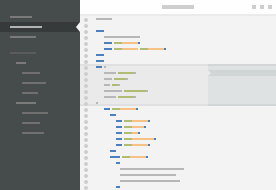
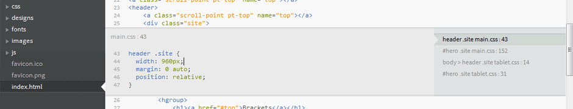
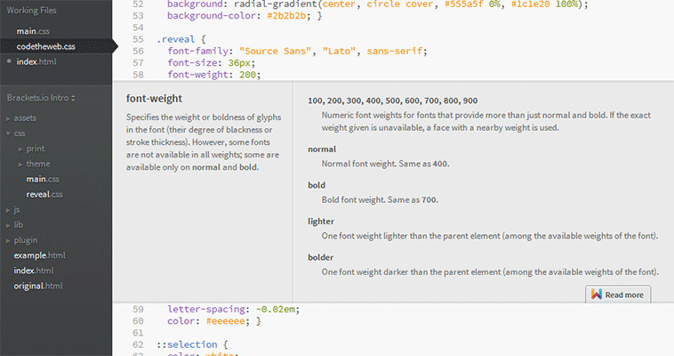
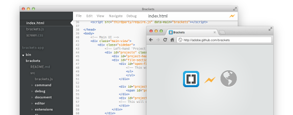
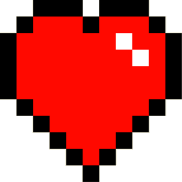
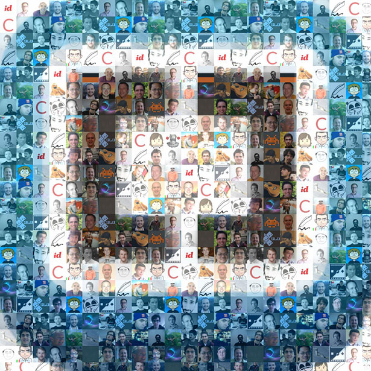

Brackets
Glenn Ruehle
Principal Scientist • Adobe
Brackets
An open source code editor for the web
- Power of an IDE. Simplicity of a text editor
- Community driven to be different
- Optimized for web design and development
A sandbox where anyone can experiment
with new ideas in web tooling.
with new ideas in web tooling.
Quick Edit
Tools shouldn't get in your way.
Quick Edit: CSS
Ctrl/Cmd + E on an HTML element will open related CSS classes for edit.Quick Edit: JavaScript
Ctrl/Cmd + E on an JavaScript function call to open the actual function.Quick Edit: Visual Color Selector
Ctrl/Cmd + E on an CSS color value (in a CSS file) to open the color selector.Quick Docs
Community-Powered Docs for the Web
Live Dev
"Design in the browser" doesn't mean you you have to give up your tools.

Live Development: CSS
Every CSS change is sent to the browser as-you-type!
Live Development: HTML
Automatic reload of HTML on save and Live Highlight HTML elements.
Let's innovate together
It's no fun to innovate alone
Approachable
Contributing should be as easy as writing code.
MIT licensed
Developed on GitHub
http://github.com/adobe/bracketsMade with  and 
(with a little HTML & CSS)
It's easy to get started
Build an extension
Extensions are the easiest way to
experiment with new ideas.
experiment with new ideas.
(many of Brackets core features are built as extensions.)
The Brackets Stack
(extensions can use any framework or lib)
Our development process
- Agile development following scrum
- New releases every ~2.5 weeks
- Pull requests reviewed every day
- External contributions take priority
An awesome community
Nearly 100 developers outside of Adobe
have contributed to Brackets in the first year
have contributed to Brackets in the first year
Get involved
- Project: http://github.com/adobe/brackets
- Wiki: http://github.com/adobe/brackets/wiki
- Backlog: http://bit.ly/BracketsBacklog
- Group: http://groups.google.com/group/brackets-dev
- IRC: #brackets on Freenode
- Twitter: @Brackets
Thanks!
We're looking forward to your contributions.